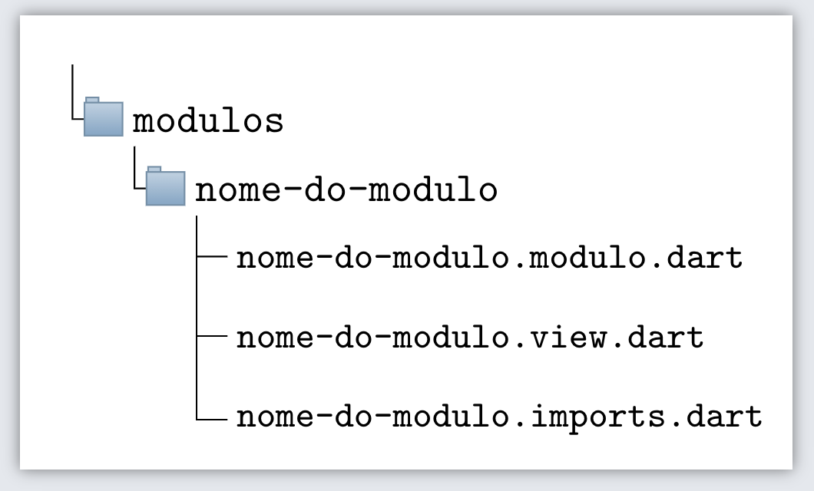

Criar modulo
Instruções de como criar um modulo genérico. Modulos genéricos são todos os outros módulos que existem além do modulo system. A aplicação é composta do modulo System, referente a aplicação em si (O sistema). O system por sua vez é formado por vários módulos genéricos.
1. Criar diretório
Dentro da pasta modulos crie uma pasta com o nome do novo modulo. Em seguida, dentro dessa nova pasta crie os arquivos seguindo a estrutura básica de um modulo, conforme imagem abaixo:

Nos próximos passos iremos preencher os conteúdos dos arquivos criados, por enquanto podem ficar vazios.
2. Estrutura e arquivos
Nesse próximo passo iremos entender cada arquivo que compõe a estrutura de um módulo.
Arquivo .modulo
O arquivo que possui a extensão ".modulo" é o arquivo de acesso e configuração do nosso modulo. Esse arquivo disponibiliza a view e o controller do nosso modulo. Confira abaixo como deve ficar o conteúdo do arquivo, utilizando como exemplo um modulo chamado "produtos".
import 'package:custom_app/custom_app/custom_app.imports.dart';
import 'package:custom_app/custom_app/web_app/web_app.imports.dart';
import 'package:flutter/material.dart';
import 'produtos.view.dart';
class Produtos implements WebAppModulo {
@override
String displayName = "Produtos";
@override
int idModulo = 1; # (1)
@override
WebModuleView get view => WebModuleView.basic(
widget: ProdutosView(
displayName: displayName, /// A view recebe o parametro 'displayName'
modulo: this, /// A view recebe o porametro 'modulo'
),
);
@override
MenuPiece menuPiece = MenuPiece.apartButton(
buttonTitle: "Produtos", // Texto do botão
menuPos: 1, // Posição do botão no menu
icon: Icons.person_outline, // Icone do botão
);
}
 I'm a code annotation! I can contain
I'm a code annotation! I can contain code, formatted
text, images, ... basically anything that can be expressed in Markdown.
Arquivo .view
O arquivo que possui a extensão ".view" será responsável pela parte visual do nosso modulo.
Existem situações onde esse arquivo não será usado, por exemplo no caso de um modulo composto que não possui uma view, mas contém submodulos onde estes sim possuem suas respectivas views. Pra ficar mais fácil de entender, pegue como exemplo um modulo chamado clientes, que tem a tarefa de gerenciar os clientes da empresa. O modulo clientes em si não possui a camada view, mas este modulo contém dois sub-modulos: clientes_formulario e clientes_relatório, onde cada um desses submodulos possuem a sua camada view.